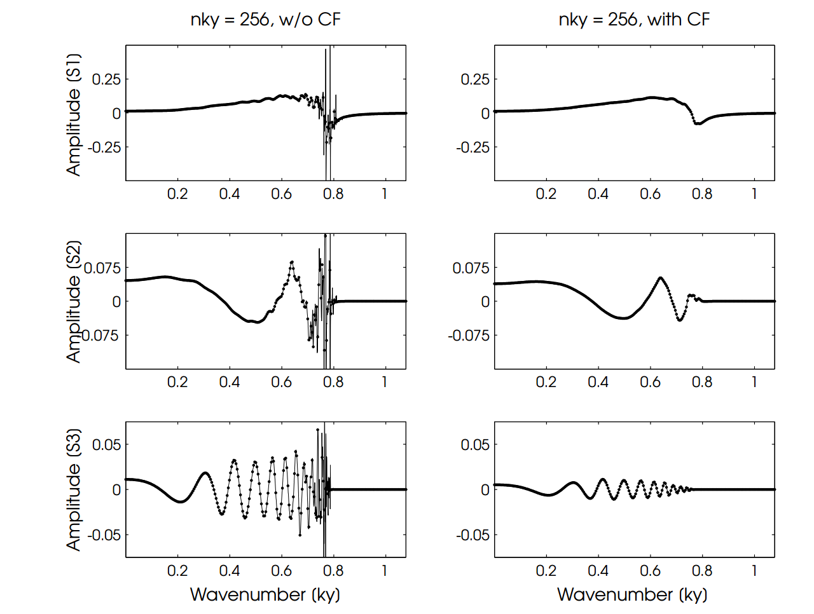
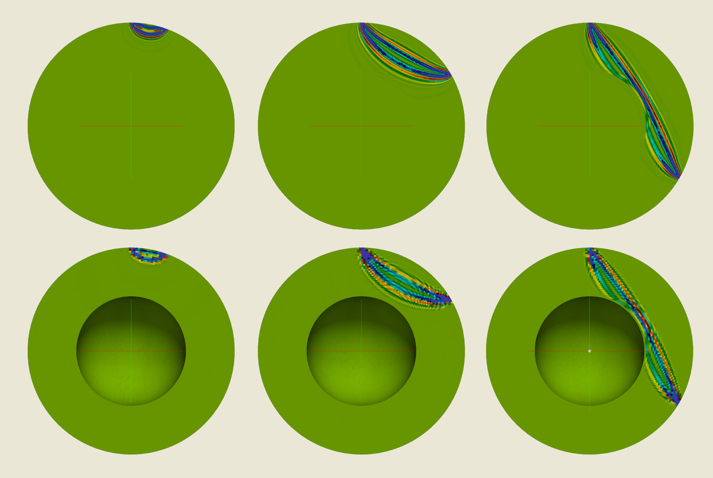
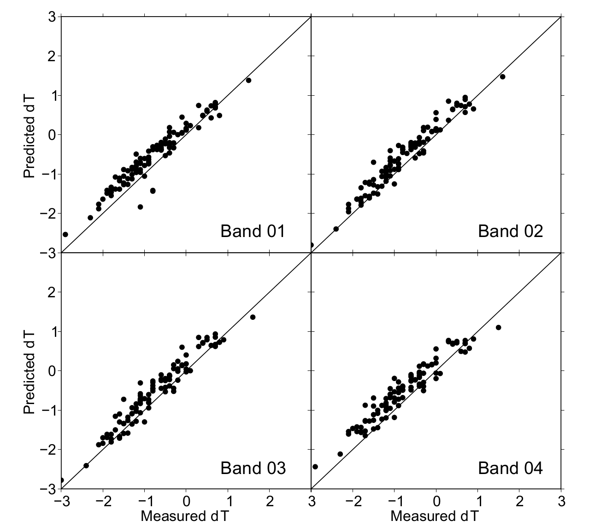

Full Waveform Tomography
Seismic Full Waveform Tomography has been one of my main interests since my thesis supervisor Prof. Stewart Greenhalgh has introduced me to the topic during the final year of my Master’s studies in 2011. Full waveform tomography describes an inverse modeling approach, where information encoded in subtle variations in seismic and acoustic waveforms that have traversed complex media, are mapped back into structural images of the subsurface at scales from medical imaging applications up to dimensions of the whole earth.
At the core of these methods lie, on one hand, compute intensive forward problems where the seismic or acoustic wave equation is solved to compute “sensitivity kernels” (essentially reverse mapping functions from waveform or traveltime differences to structure) as well as a large-scale optimization problems, where the sensitivity kernels are used to reconstruct structural models of wave speeds or other physical parameters.
There have been a plethora of approaches to solve these problems, pursuing different strategies to compute sensitivity kernels (time domain, frequency domain, approximate methods, full-wave methods) and to solve the inverse problem (conjugate gradient methods, hessian based methods, …).
While during my MSc thesis I worked on frequency-domain waveform inversion on the exploration (and near surface) scale, during my PhD thesis I focused on methods for whole-earth imaging. In this context I have developed a waveform based imaging method for global tomographiy imaging that is called “Broadband Tomography” and combines infinite-frequency ray theory for the surface wave portions of the seismogram, with finite-frequency kernels for the body wave portion of the seismic record.
3D-to-2D Data Transformations
My first project in the area of full waveform tomography has been during my MSc thesis where I was investigating detrimental effect of common 3D-to-2D data transformations on frequency domain FWI. This is important because seismic full waveform inversion is often based on forward modelling in the computationally attractive 2-D domain. Any solution of the 2-D cartesian wave equation inherently carries the assumption of being generated by a line source, extended in the out-of-plane direction, implying that source energy spreads over the surface of a cylinder, and that amplitudes scale with one over square-root of distance. However, realistic point sources like explosives or airguns, fired in a 3-D medium, generate amplitudes that decay with one over distance, since the wavefield expands spherically in all three dimensions.
Usually, geophysicists correct for this amplitude difference and the associated phase shift of π/4 by transforming recorded field data to approximate 2-D, using simplistic asymptotic filter algorithms, operating on a time-sample basis and assuming straight ray paths and a constant velocity medium. The sometimes careless usage of these filters, is in contradiction to their well known limitations. Comparing simulated data using a FDTD forward solver for visco-elastic seismic wave propagation in 3D and 2D media, we could show that filtering errors are moderate in purely acoustic situations but become substantial in complex media when arrivals overlap each other or ray paths deviate strongly from straight lines. Normalized root-mean-square deviations up to 5% and maximum relative time domain errors up to 40% were found in high contrast media, when full elastic treatment is considered. We published our results in Auer et al. 2013. Also feel free to download my thesis or a pdf of my thesis presentation.
2.5-D Full Waveform Tomography
Motivated by the questionable performance of the aforementioned 3D-to-2D filters the second chapter of my thesis investiagted potential of 2.5-D frequency-domain finite-element modelling of seismic wave propagation, which is based on Fourier transforming the 3-D wave equation along the invariant axis to frequency-wavenumber domain and solving the resulting equation for many wavenumber components, thus breaking down the 3-D problem to a large number of 2-D problems. In my thesis I made an attempt to circumvent problems associated with singularities in the wavenumber spectrum by combining a finite-element 2.5-D forward solver and a complex-frequency extension.

By shifting the poles off the real axis, they are avoided in the inverse Fourier transform to the frequency domain. I could show that problems associated with the singularities are mitigated and the total number of required wavenumber samples is significantly reduced, as soon as frequencies are allowed to be complex. Reconstructed finite-element 2.5-D seismograms compare very well to reference finite-difference 3-D seismograms. 2.5-D modelling with complex frequencies outperforms asymptotic 3D-to-2D transformation showing very low misfits between 2.5-D and 3-D synthetics.
Broadband Finite Frequency Kernels
While tomographic imaging of global anisotropy was with few exceptions still using ray theoretic methods. In my PhD thesis I have presented the theoretical and methological foundations of a new global waveform tomography approach, with the rationale to keep approximate (ray) theory where appropriate (global long- wavelength structure, surface wavedispersion), but to revert to a full-waveform interpretation where necessary (regional scale, non-geometrical wave phenomena). Finite-frequency kernels are being calculated via the spectral element solver AxiSEM (Nissen-Meyer et al. 2014) and a new code called MCkernel. Our imaging method provides a framework to stepwise improve upon a global background model by re-inverting an updated linear system whenever new (types of) data become available.

The huge advantage of using numerical methods to compute banana donought kernels as shown in the above figure is that while wave theory breaks down for non-geometrical wave phenomena like Core-diffractions, spectral-element based FF kernels can account for the complex interactions at the core mantle boundary and thus allow imaging those interesting regions of the earths mantle with higher accuracy.

My PhD thesis can be downloaded here. Also find my thesis presentation under this link.